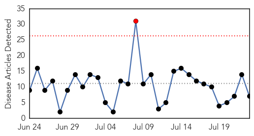

Influenza
30-Day Web Trend
1 alerts, 0 warnings

30-Day Twitter Trend
1 alerts, 0 warnings

Article Locations

Article Confidences
Top Articles:
- 0.948
- Scope Blog
- 0.909
- BARDA: Recent 'universal' flu vaccine proposals fell short
- 0.780
- NC Officials Expect To See More Cases of Canine Influenza
- 0.704
- Italian court rules mercury and aluminum in vaccines cause autism
- 0.691
- Bird Flu Vaccine 100% Effective On Chickens, Undergoing Turkey Testing
- 0.582
- Nebraska officials lift bird flu quarantine
- 0.509
- African Poultry Wrap: Disease Pressures; Poultry Price Fluctuations
Top Tweets:
-
No tweets found for Jul 23, 2015
Unknown
30-Day Web Trend
0 alerts, 0 warnings
30-Day Twitter Trend
0 alerts, 0 warnings

Article Locations
Article Confidences
Top Articles:
- 0.949
- Salmonella tied to pork sickens at least 56 in eight counties
- 0.934
- Leprosy outbreak due to Armadillos?
- 0.928
- CDC report: Lyme disease is spreading to new territories
- 0.917
- Chicago Tribune
- 0.917
- Chicago Tribune
- 0.917
- Chicago Tribune
- 0.910
- Ugandan Pigs Suffering from African Swine Fever Outbreaks
- 0.878
- Armadillos give rise to Leprosy spike in Florida: Health confirmed
- 0.874
- Armadillo exposure cited in Florida leprosy diagnosis
- 0.853
- Second active TB case confirmed in east El Paso County
- 0.838
- The Northern Virginia Daily: News and Sports coverage in Winchester and Shenandoah, Frederick, Warren and Clarke counties
- 0.832
- Don’t pet an armadillo in Florida if you don’t want to catch leprosy
- 0.826
- Fox 28: South Bend, Elkhart IN News, Weather, Sports
- 0.821
- Report: Armadillos suspected in nine Florida leprosy cases
- 0.812
- EEE detected in sentinel chickens in Norfolk
- 0.809
- Online News and Information Portal for Ghanaians In Diaspora
- 0.808
- Pig farms in Estonia hit by African Swine Fever
- 0.805
- Armadillos blamed for Florida leprosy
- 0.797
- Florida officials are blaming these armored animals for the rise in leprosy cases
- 0.788
- Malaria confirmed in Puerto Rico after student trip to Dominican Republic
- 0.774
- Osamu tuna recalled as Salmonella outbreak grows by two cases
- 0.762
- Spitting armadillos are spreading leprosy in Florida
- 0.759
- Malaria death toll in Northern Uganda hits 165
- 0.748
- Salmonella Outbreak Linked to Sushi Sickens 62, CDC Reports
- 0.748
- Salmonella Outbreak Linked to Sushi Reportedly Sickens 62
- 0.730
- Bacteria in city water supply causing diarrhoeal disease
- 0.722
- Japanese Encephalitis claims 52 lives in Assam
- 0.721
- City gets a new headache: Abnormal viral encephalitis
- 0.715
- Florida residents reportedly urged to keep away from armadillos over leprosy fears – Fox News
- 0.708
- Indian doctors should be banned from wearing white coats to reduce spread of infection, new study claims
- 0.658
- Leprosy Cases In Florida; Are The Armadillos To Blame?
- 0.655
- Sports - Brain Eating Ameba Found In St. Bernard Water Again
- 0.655
- Strengthened measures required over anthrax positive tested surfaces of the appliances in a slaughterhouse
- 0.655
- Four detained over anthrax-tainted meat distributed in retail stores in Bulgaria’s Varna district
- 0.651
- Saving cost and lives
- 0.621
- Diane Rogers
- 0.615
- Seabed Solution For Cold Sores
- 0.615
- Nepal: Three months after the earthquakes, MSF reduces operations - Nepal
- 0.613
- Wyoming Livestock Board says horse death recently in Fremont County due to virus
- 0.612
- NKy Health Department encourages hand washing to prevent further spread of intestinal illnesses
- 0.603
- Is the world losing the fight against 'superbugs'?
- 0.602
- Salmonella Raw Tuna Outbreak Sickens 62 in 11 States
- 0.599
- Sexually transmitted disease cases soar in Kalamazoo County
- 0.579
- New Alzheimer's disease drug could slow decline in dementia patients, experts say
- 0.578
- Kidney failure cases increasing
- 0.572
- Killer Amoeba Returns to New Orleans Area Tap Water
- 0.568
- Macular Degeneration (AMD): Causes, Symptoms and Treatments
- 0.560
- Blue Green Algae Found in Paradise Pond in Middletown
- 0.555
- Health problems second largest cause of suicides in India
- 0.549
- Bad summer for ticks, health officials say
Showing top 50 articles...
Top Tweets:
- 0.539
- Pregnant women are high risk of serious flu complications. If sick w/ flu, your doc may prescribe antiviral drugs LetsTalkBabies